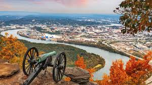

Chattanooga: Past and Present
A City Steeped in History:
Chattanooga has a rich and fascinating history that has shaped it into the vibrant city it is today. Originally inhabited by Native American tribes, the area later became an important site during the Civil War. The Battle of Chattanooga in 1863 was a turning point in the war, as Union forces gained control of the region, helping to secure their victory. Today, visitors can explore this history at the Chickamauga & Chattanooga National Military Park, which preserves battlefields and provides insight into the struggles faced by soldiers on both sides. Beyond its wartime past, Chattanooga became a key industrial hub in the 20th century, known for its railroads and manufacturing. The famous song "Chattanooga Choo Choo" immortalized the city’s role in train travel, and the historic Terminal Station remains a beloved landmark.
In recent years, Chattanooga has transformed into a modern and innovative city while still embracing its cultural roots. The Bluff View Art District showcases local and national artists in a beautiful riverside setting, while the revitalized Southside district features trendy restaurants, breweries, and music venues. The Chattanooga Choo Choo, once a bustling train station, has been reimagined as a hotel and entertainment complex, keeping its historic charm alive. When it comes to food, the city has something for every taste, from classic Southern barbecue to farm-to-table dining experiences. Whether you're visiting for a taste of history or to experience its creative energy, Chattanooga offers a unique mix of past and present that keeps people coming back.
Historic Landmarks- 1.Chickamauga & Chattanooga National Military Park – A Civil War battlefield with walking trails and museums.
- 2.Bluff View Art District – A charming area with historic buildings, galleries, and cafés.
- 3.The Chattanooga Choo Choo – A historic train station turned hotel and entertainment complex.
- Try Tremont Tavern for great burgers.
- Get classic BBQ at Sugar’s Ribs.
- Enjoy a rooftop view at Whiskey Thief.
- Explore the local music and arts scene at The Signal and Songbirds Museum.